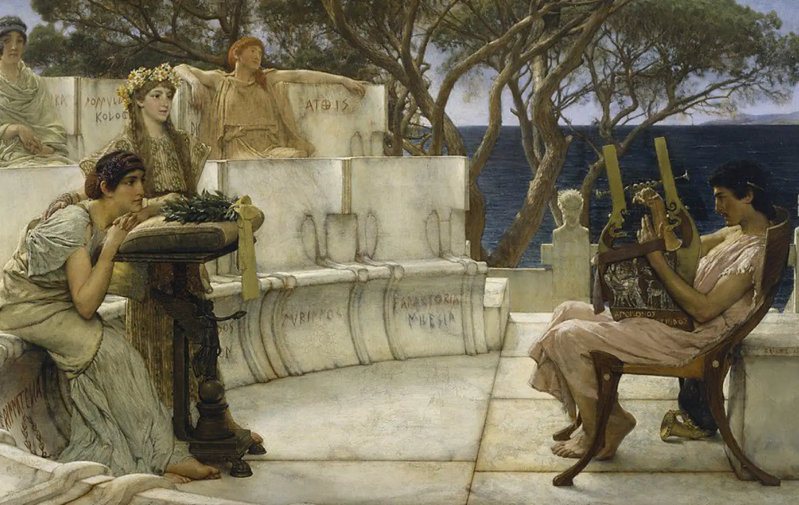
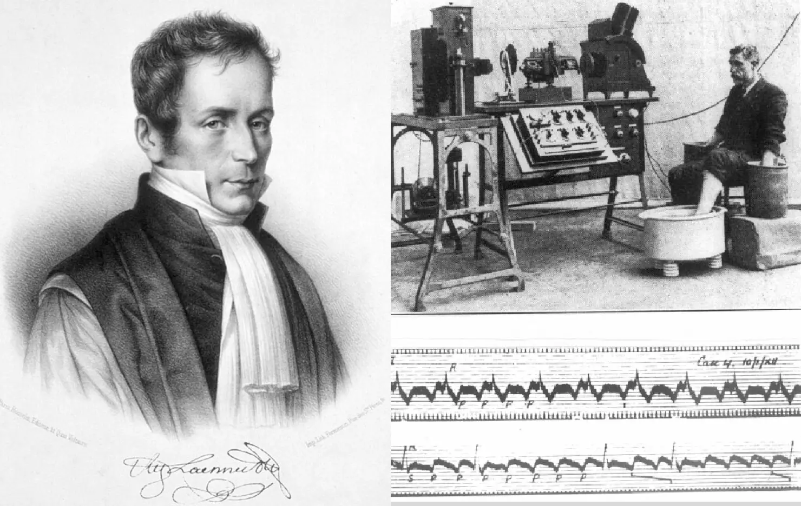
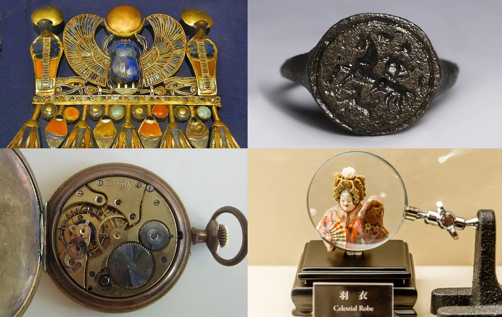
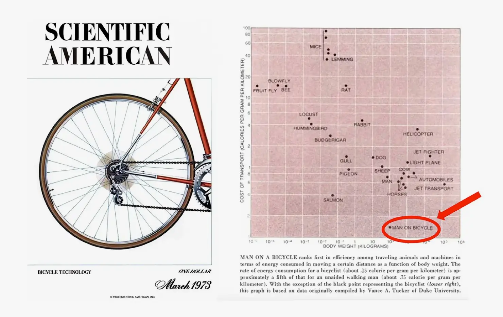
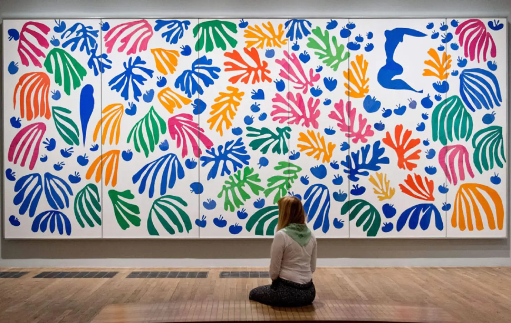
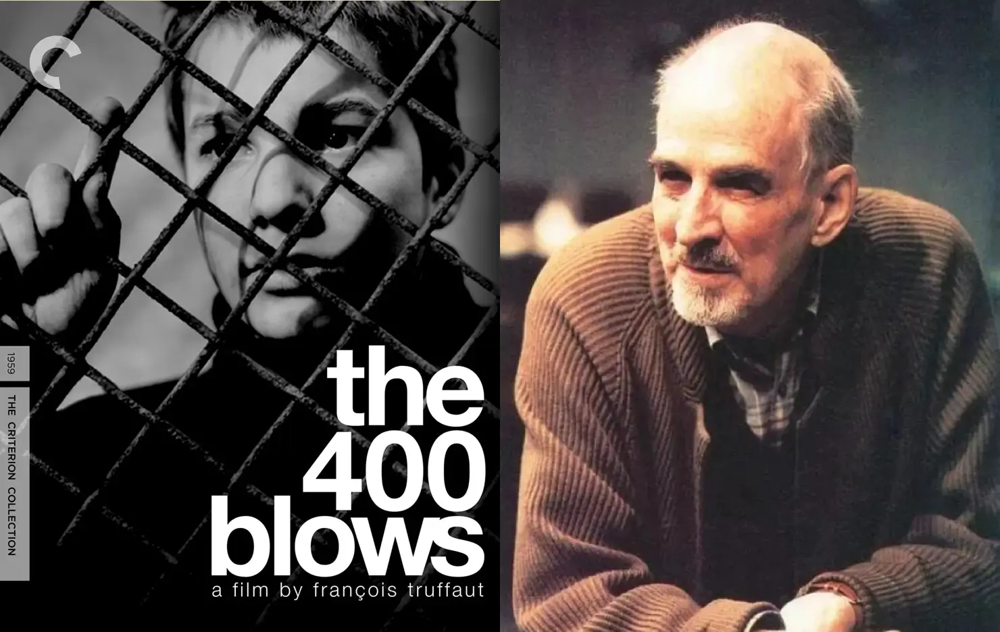

Khorós, Bergman, Pulse: What We Wear Next-Skin in the Age of AI
Sometimes I think people don't turn inward because they're brave. More often, they turn inward because they aren't—because they need to. Like switching on a lamp at night: not to make the world brighter, but to confirm your bearings.
I studied theatre in college. I've lived through more rehearsals than I can count. The most moving moments were rarely when the lines were loudest. They were when the room suddenly went quiet: someone loosening their shoulders, breathing slower, letting their eyes drift back from performing for others to finding themselves again. Stanislavski is almost blunt about it: don't rush to become the "character." First, become someone who can feel. People don't get better through harder willpower. They return through finer awareness—slowly, like coming home. [1]
[1] Before “playing a role,” Stanislavski trains you to regain sensation—relaxation, breath, rhythm.
Over the past decade—my unsteady twenties—my partner and I built two kinds of things. In the early years, we built companion multi-legged robots: some like Tachikoma from Ghost in the Shell, some like a Pixar Mars rover. In recent years, we ran a company making next-skin home products, bringing sleep companionship to hundreds of thousands of people.
Two roads, same core: tangible objects you can rely on—built for one thing. Companionship.
I've also always loved two classical Japanese theatre forms: Noh and Kyōgen. Noh is restraint—its silence feels polished, like a stone worn smooth; it moves at the speed of a long exhale. Kyōgen is light and sly, like a breeze that makes everyday absurdity briefly funny, even sweet. [2]
[2] Often paired: Noh is restraint and silence; Kyōgen is comic lightness and release.
Ancient Greek theatre had something similar: the chorus—χορός (khorós). It doesn't steal the protagonist's scene. It doesn't decide for them. It stands nearby and reminds you: you're not alone in what you're living through. The chorus makes me believe this: good companionship is never a command, and never a verdict. It's a background rhythm that helps you understand yourself. [3]
[3] Not the protagonist—more like the collective rhythm and emotional frame of the story.
That background rhythm is what I'm writing about.
Two Rivers
When we talk about "civilization," we love the outward story: fire, wheels, ships, steam, railways, electricity, the internet—like a river rushing into the sea. But tilt the camera slightly and there's another river, almost as old: humans trying, again and again, to understand themselves.
At Delphi, the phrase Γνῶθι σεαυτόν (gnōthi seauton, "know yourself") keeps getting recycled as motivational décor. To me it reads more like an instruction you can't negotiate with: you can misunderstand many things, but you can't misunderstand yourself forever.
Over time, inward tools became strangely concrete—almost charming.
In 1816, the French physician Laennec invented the stethoscope. The story goes he didn't want to press his ear against a woman's chest, so he rolled paper into a tube and listened. Suddenly the body opened up: heartbeat wasn't only "I feel it racing," but rhythm—sound—evidence you could talk about. [4]
Then thermometers turned "you look flushed" into a number. ECGs turned pulse into a trace. Holter monitoring stretched "one minute in a clinic" into "twenty-four hours in life." Each invention translated the body's whisper into something clearer. [5]
[4] Turned “I feel” into “we can listen”—making inner signals discussable. [5] Stretched “clinic moment” into “life pattern”—capturing what snapshots miss.
I love that kind of translation. It isn't romantic. It's merciful. It means we don't have to live entirely by guessing.
Merleau-Ponty reminds us, in spirit, that the body isn't simply something we own; it's how we meet the world. If you believe that, then turning inward isn't vanity—it's a survival skill. We run, fall in love, work, lose sleep, get anxious, recover, start again. All of it happens in the body first, and only later in language. [6]
The problem is: language often loses the race.
Kafka's characters can rarely say what's wrong. Nothing hurts. Nothing is "a disease." And yet they feel an invisible pressure, an unseen judgment. In The Trial, he writes of a person gently enclosed by rules they can't see—so that the more they try to explain, the deeper they seem to walk into an endless corridor. [7]
[6] Maurice Merleau-Ponty (1908–1961) was a French phenomenologist. In Phenomenology of Perception (1945), he argues the body is how we perceive, act, and meet the world—not just something we “have.” [7] Invisible rules enclosing the self; the more you explain, the longer the corridor.
So we need a new translation—not turning people into machines, but turning signals into human speech.
Inside + Outside
Humans understood the meaning of what we wear next-skin long before modern measurement existed. Think of Chinese jade: warm, restrained, worn against the skin like quiet time.
Think of ancient Egyptian adornment—gold, enamel, geometry, symbol—carrying order and declaration: you wear it not only to look good, but to say who you are, and where you stand in the universe. [8]
These next-skin objects keep returning across history: Roman signet rings used to seal and to signify; medieval pendants and amulets held over the heart like stored courage; pocket watches turning "time" into a private rhythm you can hold; Japanese netsuke, sachets, beads—everyday refinement and feeling tucked into a small companion. [9][10][11]
[8] Ornament as order and belief—identity carried on the body. [9] Decoration and authority at once—identity pressed into wax. [10] Time made personal—rhythm carried in your pocket, not only in the bell tower. [11] Everyday taste compressed into something palm-sized—companionship made light.
Their shared temperament isn't spectacle. It's closeness, durability, restraint.
So "self-delight" isn't only introspection, and it isn't only display. It's two things at once: inwardly, you keep an eye on your own shifts—sleep, fatigue, mood, rhythm. Outwardly, you let form become your taste, your choice—not to please anyone, but to feel more like yourself.
Inward is care. Outward is expression. Together, they make the whole.
The Pause
Many innovators build products by projecting their ideal life onto other people: be more disciplined, more diligent, more "upgraded." So products get louder—more prompts, more features, more insistence—as if tools alone could fix human nature.
But over the long run, most people don't want to learn new habits just to use a tool. We lean on older human patterns—stable, inherited, almost instinctive. We save our limited attention for what matters, not for a system that keeps whispering, you're not enough.
My partner Andy's wife is one of those people. She runs a bakery. She wakes before dawn to knead dough. She's disciplined, yes—but her life isn't filled with alarms. She refuses anything that makes her anxious or over-alert. Reminders should be minimal: enough, and no more.
Often, what people want isn't more functionality. It's relief: a sense that things are running without extra thinking. Theatre taught me this: the most refined performance isn't bigger movement—it's better timing. You don't have to "do" constantly. You breathe when it's time to breathe. You hold silence when it's time to hold silence. And the audience leans in.
Technology should behave like that. "Quiet" doesn't mean no interaction. It means interaction as courtesy: no disturbance, no anxiety, no manipulation. Just a small light at the right moment. And it should be adjustable. Personalization isn't "I know you better." It's "I respect how you prefer to read the world."
Take wearables. There's often a long distance between "sold" and "still used." Oura says it has sold over 5.5 million devices; Gartner has suggested abandonment for smartwatches and fitness trackers can be meaningful.
This isn't good or bad—it's just a reminder: charts, dashboards, scores, cards—last generation's interface—may only keep a small group paying attention for the long run. Think about it: when was the last time you voluntarily opened your Apple Watch health or workout page?
Not a God, a Translator
I recently read an essay by Notion's founder. He calls AI "infinite minds"—a cognitive workforce you can scale. I like that framing. It pulls AI down from myth and back into something practical. [12]
[12] A framing: AI as scalable cognitive labor—useful for thinking beyond “chatbot-as-search-box.”
But I also think AI has another path. Not only outward—producing, writing, managing—but inward: helping people understand the body, emotion, and the real changes that are hard to name.
Historically, every time we made the body more readable, it wasn't to create panic. It was to reduce guessing. Stethoscopes turned sensation into rhythm. ECGs turned rhythm into a trace. Continuous monitoring stretched moments into patterns. AI can do something similar: connect scattered clues, translate clinical language into everyday speech, and adapt the depth to how you prefer to read—one line if that's enough, more context if you ask.
And on the wearable road, we've been stuck between two languages. One is "wellness": it can tell you "your signals are fluctuating" or "maybe rest more," but it can't conclude for you. The other is "medical device": the language is harder and more specific, but the threshold is higher and the use-case narrower. Most products stay in the first lane—able to say "something might be off," unable to say "what it is." And the second lane is crossed by very few functions—only those with strong evidence and clear boundaries.
But that binary may be incomplete. The more interesting future might be the hard middle road: don't turn daily life into diagnosis, and don't turn body signals into entertainment. Think of "triage"—like the triage desk in an ER. It doesn't stamp you with a verdict. It first sorts urgency. It turns a vague feeling into a usable path: rest first, watch first, make a small adjustment first; if the signal persists and the trend sharpens, then move you toward professional checks and help.
That's why "inward AI" needs restraint: don't scare people, don't exaggerate, don't perform authority. Less "you should," more "you might." Don't turn every fluctuation into breaking news, or every tired day into failure. It shouldn't turn a person into a spreadsheet. It should feel more like Matisse—removing unnecessary lines, keeping only the shape that matters. [13]
[13] Remove lines, keep form—clarity without pressure.
Lowering the Threshold
I'm not a medical professional, so I won't pretend to be. But living through changes in my own body—and watching them in people around me—teaches one thing: big breakdowns often begin as small neglect. The fatigue you waved off years ago may become a long pattern. What you call "just mood" may hide rhythm, cycles, recovery debt underneath.
The problem is that understanding those things has long been a privilege. It takes time, money, access—to get ongoing monitoring, interpretation, and low-friction interventions that fit real life. For many people, "health management" is an expensive lifestyle, not an everyday capability.
One meaning of technology is to turn privilege into ordinary life. Printing and public libraries spread knowledge. Postal systems and telegraphs spread connection. Standard time zones, born in the railway era, aligned time itself. [14]
[14] Social synchronization—many clocks taught to speak one language.
AI paired with wearables may lower the threshold again: not just recording and notifying, but offering optional micro-interventions—so more people get clearer clues without living in the fog of guesswork.
This kind of equalizing doesn't turn everyone into a doctor. It gives more people steadier self-care—quiet, ordinary, and hard to replace.
Form Meets Meaning
I love Bergman because he films silence—the kind of judgment without dialogue. I love Truffaut because he stays light, mischievous, almost freeing—refusing to let life become pure discipline. [15]
[15] Bergman’s Persona (1966) is a duel of silence and gaze—judgment without dialogue, leaving only self-interrogation. Truffaut’s The 400 Blows (1959) follows a child escaping discipline, where lightness and pain travel together.
In the age of AI and wearables, the danger is packaging judgment as a product: turning every fluctuation into news, every metric into a score, every person into a performance review.
Wearables matter not only because they carry computation. They return understanding to daily life: worn next-skin, long-term, quiet—naturally suited to patterns, rhythms, and the things only time can clarify. And form matters too. For thousands of years, humans have used what we wear next-skin to carry identity and taste: jade's warmth, Egyptian ornament's order, Noh's restraint, the discipline of the mask. Form doesn't hide truth.
So as AI and wearables go further together, the final shape may not look like today's devices. The answer is probably already written in human habit—in how we don't want to be interrupted, but we do want to be understood.